Le traitement des articulations c’est pour toute la vie! Les médecins soignent les retraités avec des médicaments coûteux qui les mettent en dépendance et les "emprisonnent".
Il existe un mythe en Europe selon lequel les retraités français vivent mieux que ceux des autres pays en raison de leurs pensions élevées. Mais, comme le disent les retraités eux-mêmes, c'est la plus grande illusion de la société européenne. Selon les statistiques de l'Institut de recherche indépendant - seuls 3,5% des retraités français bénéficient d'un repos bien mérité, voyagent et profitent de la vie. Les autres doivent limiter leurs dépenses en raison de traitements coûteux pour des maladies liées à l'âge.
"Il est temps d'arrêter de profiter des gens et de libérer les retraités de votre esclavage".
Dr Marc Limousin, chirurgien orthopédiste, auteur de nombreux ouvrages scientifiques. Le docteur Marc Limousin vous accueille dans son cabinet à Blendecques.
Le chirurgien orthopédiste traite les pathologies de l'appareil locomoteur, c'est-à-dire des os, des articulations, des ligaments, des tendons et des muscles, des membres et du rachis.
Chirurgien spécialisé dans la prise en charge des maladies et traumatismes de la main, des membres supérieurs et de l'épaule. Consulte et opère à la clinique de St Omer.
"Quel est l'intérêt des programmes d'aide publique s'ils ne visent pas à améliorer la vie des couches les plus vulnérables de la société? Nos retraités sont devenus des chairs à canon pour la société qui fait d’eux ce qu’elle veut. Prenez par exemple le stratagème criminel utilisé par les médecins partout dans le monde.
Ils ciblent l’organe le plus fragile - les articulations, qui avec l'âge, touchent d'une manière ou d'une autre toutes les personnes de plus de 40 ans. En tant que traumatologue et chirurgien orthopédique, je ne peux plus voir les victimes de l’arbitraire et rester silencieux..."
"Il est temps pour les retraités français de prendre ce qui leur revient de droit: se libérer de la douleur".
"Pourquoi mes collègues et moi-même devrions-nous exposer les gens au risque de perdre une jambe ou un bras lors de chirurgies articulaires, dont 98% auraient pu être évitées?"
Pourquoi les médecins et les chaînes de pharmacies à tous les niveaux n'informent-ils pas les gens de notre nouveau médicament qui peut complètement restaurer les articulations en 1 mois sans chirurgie.
Je vais vous répondre! Parce que dans ce cas, les géants pharmaceutiques subiraient des pertes de plusieurs millions. À l’heure actuelle, chacun des produits pharmacologiques est conçu pour soulager les symptômes pendant une courte période. Ils fournissent un soulagement temporaire et obligent la personne à les utiliser encore et encore pour soulager la douleur pendant un certain temps.
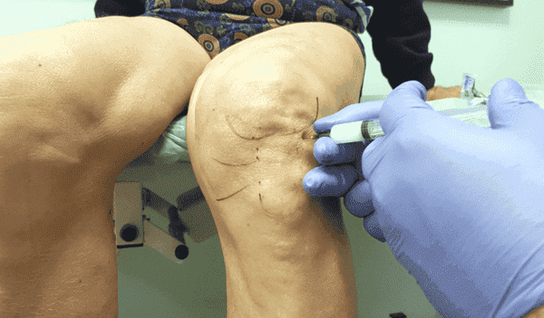 Dans 98 % des cas de traitement des articulations en France, le médecin prescrit des injections et des médicaments qui ne guérissent pas l'articulation, mais ne font que soulager temporairement la douleur. Ce qui aggrave la situation.Plus tard, le médicament cesse d'agir sur la douleur, et vient le tour du remède suivant. Et c'est ainsi que ça tourne en rond. Les médecins prescrivent des médicaments qui n'ont aucun effet sur la cause des douleurs articulaires ET REÇOIVENT DES GRANDES SOMMES DE RÉMUNÉRATION DES SOCIÉTÉS PHARMACEUTIQUES.
C'est ainsi qu’ils pompent de l'argent des retraités et des personnes âgées. On nous donne une goutte de soulagement mais tout en gardant dans l’esclavage des douleurs articulaires.
Les recherches de notre institut ont montré que les personnes âgées en France dépensent 75 % ou plus de leur retraite pour les médicaments coûteux soit disant de "qualité". Dans le même temps, au cours de l'année la majeure partie de l'argent est dépensée pour les médicaments de traitement des articulations.
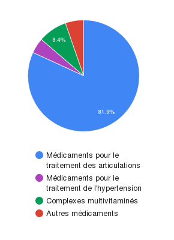81,9 % des retraités interrogés dans toutes les régions de France ont cité les médicaments pour les articulations comme étant les plus coûteux.Mais le pire, c'est que pendant cette guérison, les articulations continuent de se détériorer pendant des années et entraînent une limitation totale des mouvements, un handicap et même la mort. Lorsque la situation devient critique, ils orientent les personnes vers notre centre pour une intervention chirurgicale. Et c'est un risque et une dépense entièrement différents. Parfois, il n'y a pas d'autre option que de remplacer l'articulation, nous mettons alors des implants. Mais les prothèses sont chères et tout le monde ne peut pas se les offrir.
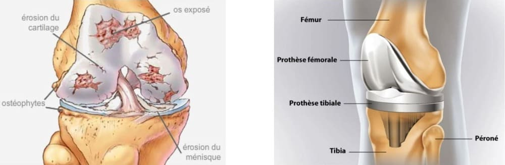 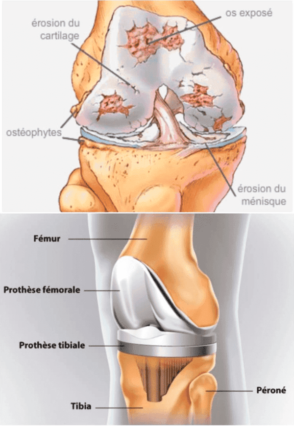 En , 128 patients qui m’ont rendu visite pour passer leurs corps sous le couteau sur prescription de leur médecin - ont évité une opération des articulations grâce à un seul cours de spray .Le nanospray rétablit l'articulation en une seule application, élimine définitivement la douleur et évite la chirurgie dans 9 cas sur 10.
Mais il n'est pas prescrit par les médecins ni vendu par les pharmacies. C'est en dépit du fait que nous avons les résultats de cinq ans d'études.
Le médicament est approuvé par l'Association européenne d'orthopédie et l'Union eurasienne d'orthopédie. En plus des résultats de nos recherches, des recherches indépendantes ont été menées par l'Institut d'orthopédie et de traumatologie de Rome et ont également confirmé les résultats sensationnels de notre formule.
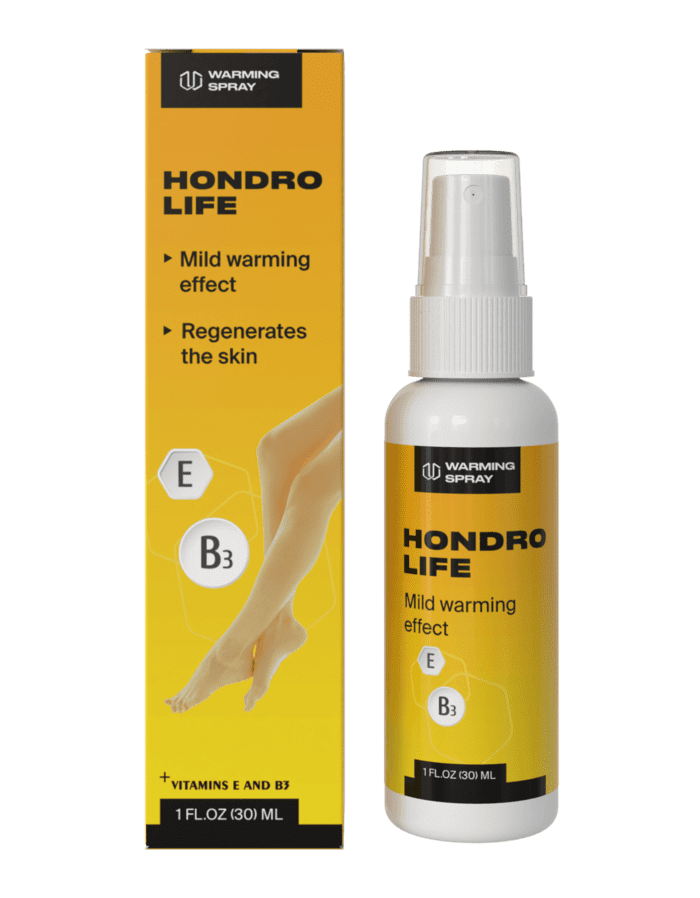 - le premier nano-spray qui restaure la structure de l'articulation en 1 mois.- spray contre les douleurs articulaires avec effet chauffant:
- ✔ Soulage instantanément la douleur.
- ✔ Restaure la fonction des tissus osseux et cartilagineux.
- ✔ Arrête le processus inflammatoire.
- ✔ Soulage l'enflure.
- ✔ Comble le manque de liquide synovial.
- ✔ Lance le processus de renouvellement complet et de restauration des cellules endommagées du tissu articulaire.
- ✔ Pénètre instantanément la peau et profondément dans l'articulation, fournissant des nutriments pour la réparation cellulaire.
Le spray ne contient pas d'agents cancérigènes, d'allergènes ou de produits chimiques synthétiques.
se compose exclusivement d'extraits de plantes médicinales qui, grâce à la synergie de substances, lancent les processus de construction et de régénération de l'organisme.
Les huiles essentielles de menthe, cannelle, eucalyptus préviennent la destruction des articulations et des ligaments, soulagent les douleurs articulaires, nourrissent le tissu conjonctif.
Le panthénol et l'allantoïne arrêtent les saignements et aident à former un film protecteur sur les tissus enflammés.
La griffe du diable, les extraits d'arnica augmentent la mobilité des articulations et améliorent la circulation sanguine.
La glucosamine et la chondroïtine renforcent le cartilage, les tendons et les ligaments, réduisent les inflammations et les gonflements et favorisent la régénération active du cartilage.
Les vitamines E et B3 décongestionnent, nourrissent, tonifient et favorisent la régénération des tissus.
Les résultats des essais cliniques ont stupéfié les entreprises et enthousiasmé la science!
"...Nous n’allons pas vendre au prix de ! Ce produit peut être vendu dans les pharmacies au prix d'au moins 480 euros par unité. Nous sommes obligés d’augmenter le prix à quelques fois car de cette façon, nous pouvons compenser la perte de la demande pour les produits restants et maintenir un équilibre dans les ventes. Tous les Français ne pourront pas acquérir ce produit coûteux, ce qui signifie que les gens achèteront d'autres médicaments moins efficaces".
convient au traitement de l'ostéochondrose, de l'arthrite, de l'arthrose et d'autres troubles articulaires, y compris les troubles traumatiques liés à l'âge.
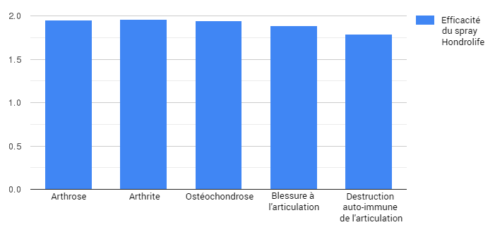a montré une récupération complète de la structure articulaire en 1 mois (le pourcentage le plus bas était dans le groupe de la maladie auto-immune et était de 87% de récupération).
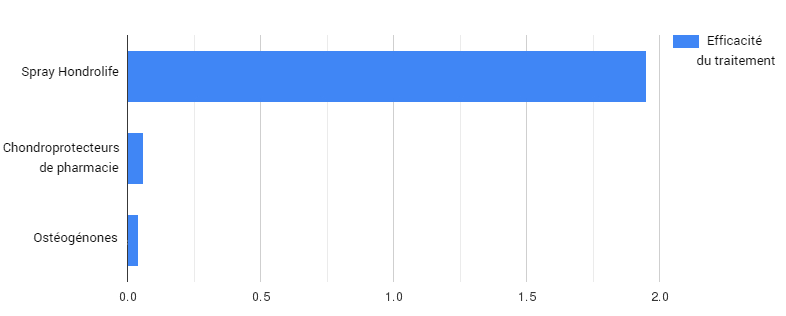
est dix fois plus efficace que les produits pharmaceutiques pour traiter les articulations et restaurer les tissus articulaires.
Grâce à notre formule unique, est capable de guérir tous les types de troubles articulaires connus:
Arthrite.
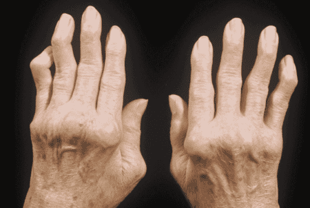Arthrose.
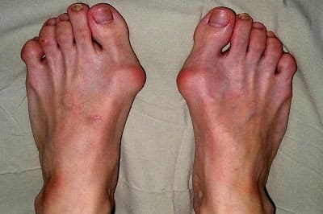Ostéoarthrite.
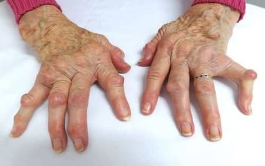Ostéochondrose.
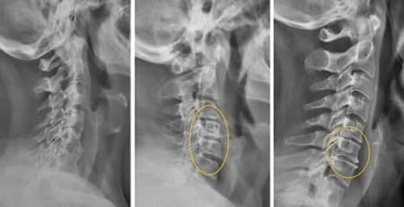Ostéoporose.
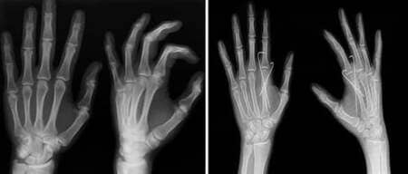Blessures au ménisque.
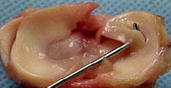Arthrose du genou.
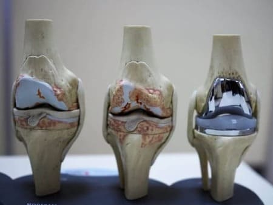Douleur articulaire de toute étiologie.
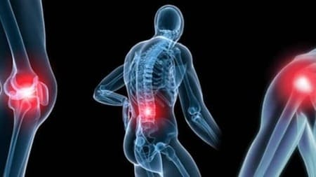Dr Marc Limousin
"Dans toutes les études du spray "" le taux d'effets secondaires est égal à 0%. C’était notre priorité depuis le début du développement et jusqu’à la fin de nos recherches. Il était important pour nous de créer un produit qui permettrait aux personnes âgées de profiter de la vie à la retraite, plutôt que d'être allongées dans un lit d'hôpital sous de puissants analgésiques et d'attendre la fin de la vie dans une terrible dépression".
Vous pouvez commander le spray original en France uniquement sur ce site!
Comme nous avons toutes les licences, les Certificats de conformité et l'autorisation de mettre en œuvre le spray de traitement des articulations , nous sommes le seul vendeur du spray original. Le formulaire de demande officiel pour le spray à prix réduit est ci-dessous sur cette page.
PROMOTION POUR LES RÉSIDENTS DE FRANCE DE PLUS DE 18 ANS
1. Pour obtenir au prix de et recevoir une réduction de 50%, vous devez avoir 18 ans au moment de la commande.
2. La quantité est limitée. La réduction est accordée si l’article à prix réduit est disponible au moment de la commande.
IMPORTANT! Des études ont montré que le mois c’est le meilleur mois pour commencer à traiter les articulations. Grâce à la stabilisation de la température moyenne, les processus métaboliques du corps sont accélérés et l'effet du spray est intensifié. Le traitement est 37 % plus rapide qu'à d'autres périodes de l'année.